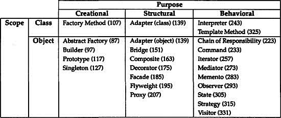
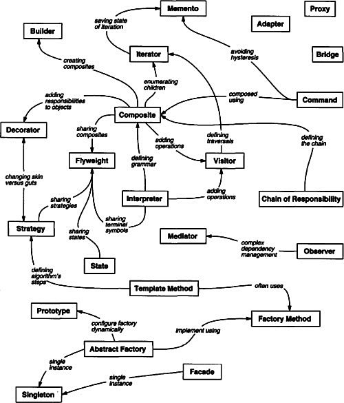
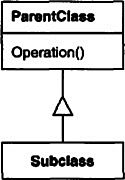
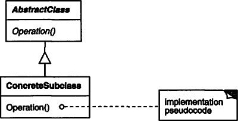
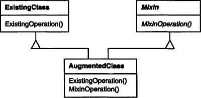
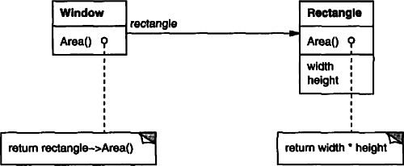
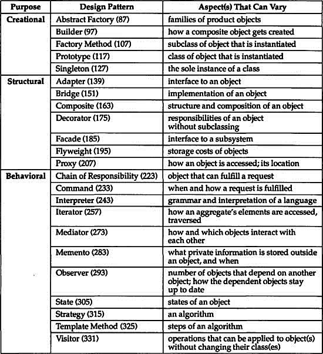

Designing object-oriented software is hard, and designing reusable object-oriented software is even harder. You must find pertinent objects, factor them into classes at the right granularity, define class interfaces and inheritance hierarchies, and establish key relationships among them. Your design should be specific to the problem at hand but also general enough to address future problems and requirements. You also want to avoid redesign, or at least minimize it. Experienced object-oriented designers will tell you that a reusable and flexible design is difficult if not impossible to get “right” the first time. Before a design is finished, they usually try to reuse it several times, modifying it each time.
Yet experienced object-oriented designers do make good designs. Meanwhile new designers are overwhelmed by the options available and tend to fall back on non-object-oriented techniques they’ve used before. It takes a long time for novices to learn what good object-oriented design is all about. Experienced designers evidently know something inexperienced ones don’t. What is it?
One thing expert designers know not to do is solve every problem from first principles. Rather, they reuse solutions that have worked for them in the past. When they find a good solution, they use it again and again. Such experience is part of what makes them experts. Consequently, you’ll find recurring patterns of classes and communicating objects in many object-oriented systems. These patterns solve specific design problems and make object-oriented designs more flexible, elegant, and ultimately reusable. They help designers reuse successful designs by basing new designs on prior experience. A designer who is familiar with such patterns can apply them immediately to design problems without having to rediscover them.
An analogy will help illustrate the point. Novelists and playwrights rarely design their plots from scratch. Instead, they follow patterns like “Tragically Flawed Hero” (Macbeth, Hamlet, etc.) or “The Romantic Novel” (countless romance novels). In the same way, object-oriented designers follow patterns like “represent states with objects” and “decorate objects so you can easily add/remove features.” Once you know the pattern, a lot of design decisions follow automatically.
We all know the value of design experience. How many times have you had design déjàvu—that feeling that you’ve solved a problem before but not knowing exactly where or how? If you could remember the details of the previous problem and how you solved it, then you could reuse the experience instead of rediscovering it. However, we don’t do a good job of recording experience in software design for others to use.
The purpose of this book is to record experience in designing object-oriented software as design patterns. Each design pattern systematically names, explains, and evaluates an important and recurring design in object-oriented systems. Our goal is to capture design experience in a form that people can use effectively. To this end we have documented some of the most important design patterns and present them as a catalog.
Design patterns make it easier to reuse successful designs and architectures. Expressing proven techniques as design patterns makes them more accessible to developers of new systems. Design patterns help you choose design alternatives that make a system reusable and avoid alternatives that compromise reusability. Design patterns can even improve the documentation and maintenance of existing systems by furnishing an explicit specification of class and object interactions and their underlying intent. Put simply, design patterns help a designer get a design “right” faster.
None of the design patterns in this book describes new or unproven designs. We have included only designs that have been applied more than once in different systems. Most of these designs have never been documented before. They are either part of the folklore of the object-oriented community or are elements of some successful object-oriented systems—neither of which is easy for novice designers to learn from. So although these designs aren’t new, we capture them in a new and accessible way: as a catalog of design patterns having a consistent format.
Despite the book’s size, the design patterns in it capture only a fraction of what an expert might know. It doesn’t have any patterns dealing with concurrency or distributed programming or real-time programming. It doesn’t have any application domain-specific patterns. It doesn’t tell you how to build user interfaces, how to write device drivers, or how to use an object-oriented database. Each of these areas has its own patterns, and it would be worthwhile for someone to catalog those too.
Christopher Alexander says, “Each pattern describes a problem which occurs over and over again in our environment, and then describes the core of the solution to that problem, in such a way that you can use this solution a million times over, without ever doing it the same way twice” [AIS+77, page x]. Even though Alexander was talking about patterns in buildings and towns, what he says is true about object-oriented design patterns. Our solutions are expressed in terms of objects and interfaces instead of walls and doors, but at the core of both kinds of patterns is a solution to a problem in a context.
In general, a pattern has four essential elements:
1. The pattern name is a handle we can use to describe a design problem, its solutions, and consequences in a word or two. Naming a pattern immediately increases our design vocabulary. It lets us design at a higher level of abstraction. Having a vocabulary for patterns lets us talk about them with our colleagues, in our documentation, and even to ourselves. It makes it easier to think about designs and to communicate them and their trade-offs to others. Finding good names has been one of the hardest parts of developing our catalog.
2. The problem describes when to apply the pattern. It explains the problem and its context. It might describe specific design problems such as how to represent algorithms as objects. It might describe class or object structures that are symptomatic of an inflexible design. Sometimes the problem will include a list of conditions that must be met before it makes sense to apply the pattern.
3. The solution describes the elements that make up the design, their relationships, responsibilities, and collaborations. The solution doesn’t describe a particular concrete design or implementation, because a pattern is like a template that can be applied in many different situations. Instead, the pattern provides an abstract description of a design problem and how a general arrangement of elements (classes and objects in our case) solves it.
4. The consequences are the results and trade-offs of applying the pattern. Though consequences are often unvoiced when we describe design decisions, they are critical for evaluating design alternatives and for understanding the costs and benefits of applying the pattern.
The consequences for software often concern space and time trade-offs. They may address language and implementation issues as well. Since reuse is often a factor in object-oriented design, the consequences of a pattern include its impact on a system’s flexibility, extensibility, or portability. Listing these consequences explicitly helps you understand and evaluate them.
Point of view affects one’s interpretation of what is and isn’t a pattern. One person’s pattern can be another person’s primitive building block. For this book we have concentrated on patterns at a certain level of abstraction. Design patterns are not about designs such as linked lists and hash tables that can be encoded in classes and reused as is. Nor are they complex, domain-specific designs for an entire application or subsystem. The design patterns in this book are descriptions of communicating objects and classes that are customized to solve a general design problem in a particular context.
A design pattern names, abstracts, and identifies the key aspects of a common design structure that make it useful for creating a reusable object-oriented design. The design pattern identifies the participating classes and instances, their roles and collaborations, and the distribution of responsibilities. Each design pattern focuses on a particular object-oriented design problem or issue. It describes when it applies, whether it can be applied in view of other design constraints, and the consequences and trade-offs of its use. Since we must eventually implement our designs, a design pattern also provides sample C++ and (sometimes) Smalltalk code to illustrate an implementation.
Although design patterns describe object-oriented designs, they are based on practical solutions that have been implemented in mainstream object-oriented programming languages like Smalltalk and C++ rather than procedural languages (Pascal, C, Ada) or more dynamic object-oriented languages (CLOS, Dylan, Self). We chose Smalltalk and C++ for pragmatic reasons: Our day-to-day experience has been in these languages, and they are increasingly popular.
The choice of programming language is important because it influences one’s point of view. Our patterns assume Smalltalk/C++-level language features, and that choice determines what can and cannot be implemented easily. If we assumed procedural languages, we might have included design patterns called “Inheritance,” “Encapsulation,” and “Polymorphism.” Similarly, some of our patterns are supported directly by the less common object-oriented languages. CLOS has multi-methods, for example, which lessen the need for a pattern such as Visitor (page 331). In fact, there are enough differences between Smalltalk and C++ to mean that some patterns can be expressed more easily in one language than the other. (See Iterator (257) for an example.)
The Model/View/Controller (MVC) triad of classes [KP88] is used to build user interfaces in Smalltalk-80. Looking at the design patterns inside MVC should help you see what we mean by the term “pattern.”
MVC consists of three kinds of objects. The Model is the application object, the View is its screen presentation, and the Controller defines the way the user interface reacts to user input. Before MVC, user interface designs tended to lump these objects together. MVC decouples them to increase flexibility and reuse.
MVC decouples views and models by establishing a subscribe/notify protocol between them. A view must ensure that its appearance reflects the state of the model. Whenever the model’s data changes, the model notifies views that depend on it. In response, each view gets an opportunity to update itself. This approach lets you attach multiple views to a model to provide different presentations. You can also create new views for a model without rewriting it.
The following diagram shows a model and three views. (We’ve left out the controllers for simplicity.) The model contains some data values, and the views defining a spreadsheet, histogram, and pie chart display these data in various ways. The model communicates with its views when its values change, and the views communicate with the model to access these values.
Taken at face value, this example reflects a design that decouples views from models. But the design is applicable to a more general problem: decoupling objects so that changes to one can affect any number of others without requiring the changed object to know details of the others. This more general design is described by the Observer (page 293) design pattern.
Another feature of MVC is that views can be nested. For example, a control panel of buttons might be implemented as a complex view containing nested button views. The user interface for an object inspector can consist of nested views that may be reused in a debugger. MVC supports nested views with the CompositeView class, a subclass of View. CompositeView objects act just like View objects; a composite view can be used wherever a view can be used, but it also contains and manages nested views.
Again, we could think of this as a design that lets us treat a composite view just like we treat one of its components. But the design is applicable to a more general problem, which occurs whenever we want to group objects and treat the group like an individual object. This more general design is described by the Composite (163) design pattern. It lets you create a class hierarchy in which some subclasses define primitive objects (e.g., Button) and other classes define composite objects (CompositeView) that assemble the primitives into more complex objects.
MVC also lets you change the way a view responds to user input without changing its visual presentation. You might want to change the way it responds to the keyboard, for example, or have it use a pop-up menu instead of command keys. MVC encapsulates the response mechanism in a Controller object. There is a class hierarchy of controllers, making it easy to create a new controller as a variation on an existing one.
A view uses an instance of a Controller subclass to implement a particular response strategy; to implement a different strategy, simply replace the instance with a different kind of controller. It’s even possible to change a view’s controller at run-time to let the view change the way it responds to user input. For example, a view can be disabled so that it doesn’t accept input simply by giving it a controller that ignores input events.
The View-Controller relationship is an example of the Strategy (315) design pattern. A Strategy is an object that represents an algorithm. It’s useful when you want to replace the algorithm either statically or dynamically, when you have a lot of variants of the algorithm, or when the algorithm has complex data structures that you want to encapsulate.
MVC uses other design patterns, such as Factory Method (107) to specify the default controller class for a view and Decorator (175) to add scrolling to a view. But the main relationships in MVC are given by the Observer, Composite, and Strategy design patterns.
How do we describe design patterns? Graphical notations, while important and useful, aren’t sufficient. They simply capture the end product of the design process as relationships between classes and objects. To reuse the design, we must also record the decisions, alternatives, and trade-offs that led to it. Concrete examples are important too, because they help you see the design in action.
We describe design patterns using a consistent format. Each pattern is divided into sections according to the following template. The template lends a uniform structure to the information, making design patterns easier to learn, compare, and use.
The pattern’s name conveys the essence of the pattern succinctly. A good name is vital, because it will become part of your design vocabulary. The pattern’s classification reflects the scheme we introduce in Section 1.5.
A short statement that answers the following questions: What does the design pattern do? What is its rationale and intent? What particular design issue or problem does it address?
Other well-known names for the pattern, if any.
A scenario that illustrates a design problem and how the class and object structures in the pattern solve the problem. The scenario will help you understand the more abstract description of the pattern that follows.
What are the situations in which the design pattern can be applied? What are examples of poor designs that the pattern can address? How can you recognize these situations?
A graphical representation of the classes in the pattern using a notation based on the Object Modeling Technique (OMT) [RBP+91]. We also use interaction diagrams [JCJO92, Boo94] to illustrate sequences of requests and collaborations between objects. Appendix B describes these notations in detail.
The classes and/or objects participating in the design pattern and their responsibilities.
How the participants collaborate to carry out their responsibilities.
How does the pattern support its objectives? What are the trade-offs and results of using the pattern? What aspect of system structure does it let you vary independently?
What pitfalls, hints, or techniques should you be aware of when implementing the pattern? Are there language-specific issues?
Code fragments that illustrate how you might implement the pattern in C++ or Smalltalk.
Examples of the pattern found in real systems. We include at least two examples from different domains.
What design patterns are closely related to this one? What are the important differences? With which other patterns should this one be used?
The appendices provide background information that will help you understand the patterns and the discussions surrounding them. Appendix A is a glossary of terminology we use. We’ve already mentioned Appendix B, which presents the various notations. We’ll also describe aspects of the notations as we introduce them in the upcoming discussions. Finally, Appendix C contains source code for the foundation classes we use in code samples.
The catalog beginning on page 79 contains 23 design patterns. Their names and intents are listed next to give you an overview. The number in parentheses after each pattern name gives the page number for the pattern (a convention we follow throughout the book).
Abstract Factory (87) Provide an interface for creating families of related or dependent objects without specifying their concrete classes.
Adapter (139) Convert the interface of a class into another interface clients expect. Adapter lets classes work together that couldn’t otherwise because of incompatible interfaces.
Bridge (151) Decouple an abstraction from its implementation so that the two can vary independently.
Builder (97) Separate the construction of a complex object from its representation so that the same construction process can create different representations.
Chain of Responsibility (223) Avoid coupling the sender of a request to its receiver by giving more than one object a chance to handle the request. Chain the receiving objects and pass the request along the chain until an object handles it.
Command (233) Encapsulate a request as an object, thereby letting you parameterize clients with different requests, queue or log requests, and support undoable operations.
Composite (163) Compose objects into tree structures to represent part-whole hierarchies. Composite lets clients treat individual objects and compositions of objects uniformly.
Decorator (175) Attach additional responsibilities to an object dynamically. Decorators provide a flexible alternative to subclassing for extending functionality.
Facade (185) Provide a unified interface to a set of interfaces in a subsystem. Facade defines a higher-level interface that makes the subsystem easier to use.
Factory Method (107) Define an interface for creating an object, but let subclasses decide which class to instantiate. Factory Method lets a class defer instantiation to subclasses.
Flyweight (195) Use sharing to support large numbers of fine-grained objects efficiently.
Interpreter (243) Given a language, define a represention for its grammar along with an interpreter that uses the representation to interpret sentences in the language.
Iterator (257) Provide a way to access the elements of an aggregate object sequentially without exposing its underlying representation.
Mediator (273) Define an object that encapsulates how a set of objects interact. Mediator promotes loose coupling by keeping objects from referring to each other explicitly, and it lets you vary their interaction independently.
Memento (283) Without violating encapsulation, capture and externalize an object’s internal state so that the object can be restored to this state later.
Observer (293) Define a one-to-many dependency between objects so that when one object changes state, all its dependents are notified and updated automatically.
Prototype (117) Specify the kinds of objects to create using a prototypical instance, and create new objects by copying this prototype.
Proxy (207) Provide a surrogate or placeholder for another object to control access to it.
Singleton (127) Ensure a class only has one instance, and provide a global point of access to it.
State (305) Allow an object to alter its behavior when its internal state changes. The object will appear to change its class.
Strategy (315) Define a family of algorithms, encapsulate each one, and make them interchangeable. Strategy lets the algorithm vary independently from clients that use it.
Template Method (325) Define the skeleton of an algorithm in an operation, deferring some steps to subclasses. Template Method lets subclasses redefine certain steps of an algorithm without changing the algorithm’s structure.
Visitor (331) Represent an operation to be performed on the elements of an object structure. Visitor lets you define a new operation without changing the classes of the elements on which it operates.
Design patterns vary in their granularity and level of abstraction. Because there are many design patterns, we need a way to organize them. This section classifies design patterns so that we can refer to families of related patterns. The classification helps you learn the patterns in the catalog faster, and it can direct efforts to find new patterns as well.
We classify design patterns by two criteria (Table 1.1). The first criterion, called purpose, reflects what a pattern does. Patterns can have either creational, structural, or behavioral purpose. Creational patterns concern the process of object creation. Structural patterns deal with the composition of classes or objects. Behavioral patterns characterize the ways in which classes or objects interact and distribute responsibility.
Table 1.1: Design pattern space

The second criterion, called scope, specifies whether the pattern applies primarily to classes or to objects. Class patterns deal with relationships between classes and their subclasses. These relationships are established through inheritance, so they are static—fixed at compile-time. Object patterns deal with object relationships, which can be changed at run-time and are more dynamic. Almost all patterns use inheritance to some extent. So the only patterns labeled “class patterns” are those that focus on class relationships. Note that most patterns are in the Object scope.
Creational class patterns defer some part of object creation to subclasses, while Creational object patterns defer it to another object. The Structural class patterns use inheritance to compose classes, while the Structural object patterns describe ways to assemble objects. The Behavioral class patterns use inheritance to describe algorithms and flow of control, whereas the Behavioral object patterns describe how a group of objects cooperate to perform a task that no single object can carry out alone.
There are other ways to organize the patterns. Some patterns are often used together. For example, Composite is often used with Iterator or Visitor. Some patterns are alternatives: Prototype is often an alternative to Abstract Factory. Some patterns result in similar designs even though the patterns have different intents. For example, the structure diagrams of Composite and Decorator are similar.
Yet another way to organize design patterns is according to how they reference each other in their “Related Patterns” sections. Figure 1.1 depicts these relationships graphically.
Figure 1.1: Design pattern relationships

Clearly there are many ways to organize design patterns. Having multiple ways of thinking about patterns will deepen your insight into what they do, how they compare, and when to apply them.
Design patterns solve many of the day-to-day problems object-oriented designers face, and in many different ways. Here are several of these problems and how design patterns solve them.
Object-oriented programs are made up of objects. An object packages both data and the procedures that operate on that data. The procedures are typically called methods or operations. An object performs an operation when it receives a request (or message) from a client.
Requests are the only way to get an object to execute an operation. Operations are the only way to change an object’s internal data. Because of these restrictions, the object’s internal state is said to be encapsulated; it cannot be accessed directly, and its representation is invisible from outside the object.
The hard part about object-oriented design is decomposing a system into objects. The task is difficult because many factors come into play: encapsulation, granularity, dependency, flexibility, performance, evolution, reusability, and on and on. They all influence the decomposition, often in conflicting ways.
Object-oriented design methodologies favor many different approaches. You can write a problem statement, single out the nouns and verbs, and create corresponding classes and operations. Or you can focus on the collaborations and responsibilities in your system. Or you can model the real world and translate the objects found during analysis into design. There will always be disagreement on which approach is best.
Many objects in a design come from the analysis model. But object-oriented designs often end up with classes that have no counterparts in the real world. Some of these are low-level classes like arrays. Others are much higher-level. For example, the Composite (163) pattern introduces an abstraction for treating objects uniformly that doesn’t have a physical counterpart. Strict modeling of the real world leads to a system that reflects today’s realities but not necessarily tomorrow’s. The abstractions that emerge during design are key to making a design flexible.
Design patterns help you identify less-obvious abstractions and the objects that can capture them. For example, objects that represent a process or algorithm don’t occur in nature, yet they are a crucial part of flexible designs. The Strategy (315) pattern describes how to implement interchangeable families of algorithms. The State (305) pattern represents each state of an entity as an object. These objects are seldom found during analysis or even the early stages of design; they’re discovered later in the course of making a design more flexible and reusable.
Objects can vary tremendously in size and number. They can represent everything down to the hardware or all the way up to entire applications. How do we decide what should be an object?
Design patterns address this issue as well. The Facade (185) pattern describes how to represent complete subsystems as objects, and the Flyweight (195) pattern describes how to support huge numbers of objects at the finest granularities. Other design patterns describe specific ways of decomposing an object into smaller objects. Abstract Factory (87) and Builder (97) yield objects whose only responsibilities are creating other objects. Visitor (331) and Command (233) yield objects whose only responsibilities are to implement a request on another object or group of objects.
Every operation declared by an object specifies the operation’s name, the objects it takes as parameters, and the operation’s return value. This is known as the operation’s signature. The set of all signatures defined by an object’s operations is called the interface to the object. An object’s interface characterizes the complete set of requests that can be sent to the object. Any request that matches a signature in the object’s interface may be sent to the object.
A type is a name used to denote a particular interface. We speak of an object as having the type “Window” if it accepts all requests for the operations defined in the interface named “Window.” An object may have many types, and widely different objects can share a type. Part of an object’s interface may be characterized by one type, and other parts by other types. Two objects of the same type need only share parts of their interfaces. Interfaces can contain other interfaces as subsets. We say that a type is a subtype of another if its interface contains the interface of its supertype. Often we speak of a subtype inheriting the interface of its supertype.
Interfaces are fundamental in object-oriented systems. Objects are known only through their interfaces. There is no way to know anything about an object or to ask it to do anything without going through its interface. An object’s interface says nothing about its implementation—different objects are free to implement requests differently. That means two objects having completely different implementations can have identical interfaces.
When a request is sent to an object, the particular operation that’s performed depends on both the request and the receiving object. Different objects that support identical requests may have different implementations of the operations that fulfill these requests. The run-time association of a request to an object and one of its operations is known as dynamic binding.
Dynamic binding means that issuing a request doesn’t commit you to a particular implementation until run-time. Consequently, you can write programs that expect an object with a particular interface, knowing that any object that has the correct interface will accept the request. Moreover, dynamic binding lets you substitute objects that have identical interfaces for each other at run-time. This substitutability is known as polymorphism, and it’s a key concept in object-oriented systems. It lets a client object make few assumptions about other objects beyond supporting a particular interface. Polymorphism simplifies the definitions of clients, decouples objects from each other, and lets them vary their relationships to each other at run-time.
Design patterns help you define interfaces by identifying their key elements and the kinds of data that get sent across an interface. A design pattern might also tell you what not to put in the interface. The Memento (283) pattern is a good example. It describes how to encapsulate and save the internal state of an object so that the object can be restored to that state later. The pattern stipulates that Memento objects must define two interfaces: a restricted one that lets clients hold and copy mementos, and a privileged one that only the original object can use to store and retrieve state in the memento.
Design patterns also specify relationships between interfaces. In particular, they often require some classes to have similar interfaces, or they place constraints on the interfaces of some classes. For example, both Decorator (175) and Proxy (207) require the interfaces of Decorator and Proxy objects to be identical to the decorated and proxied objects. In Visitor (331), the Visitor interface must reflect all classes of objects that visitors can visit.
So far we’ve said little about how we actually define an object. An object’s implementation is defined by its class. The class specifies the object’s internal data and representation and defines the operations the object can perform.
Our OMT-based notation (summarized in Appendix B) depicts a class as a rectangle with the class name in bold. Operations appear in normal type below the class name. Any data that the class defines comes after the operations. Lines separate the class name from the operations and the operations from the data:
Return types and instance variable types are optional, since we don’t assume a statically typed implementation language.
Objects are created by instantiating a class. The object is said to be an instance of the class. The process of instantiating a class allocates storage for the object’s internal data (made up of instance variables) and associates the operations with these data. Many similar instances of an object can be created by instantiating a class.
A dashed arrowhead line indicates a class that instantiates objects of another class. The arrow points to the class of the instantiated objects.
New classes can be defined in terms of existing classes using class inheritance. When a subclass inherits from a parent class, it includes the definitions of all the data and operations that the parent class defines. Objects that are instances of the subclass will contain all data defined by the subclass and its parent classes, and they’ll be able to perform all operations defined by this subclass and its parents. We indicate the subclass relationship with a vertical line and a triangle:

An abstract class is one whose main purpose is to define a common interface for its subclasses. An abstract class will defer some or all of its implementation to operations defined in subclasses; hence an abstract class cannot be instantiated. The operations that an abstract class declares but doesn’t implement are called abstract operations. Classes that aren’t abstract are called concrete classes.
Subclasses can refine and redefine behaviors of their parent classes. More specifically, a class may override an operation defined by its parent class. Overriding gives subclasses a chance to handle requests instead of their parent classes. Class inheritance lets you define classes simply by extending other classes, making it easy to define families of objects having related functionality.
The names of abstract classes appear in slanted type to distinguish them from concrete classes. Slanted type is also used to denote abstract operations. A diagram may include pseudocode for an operation’s implementation; if so, the code will appear in a dogeared box connected by a dashed line to the operation it implements.

A mixin class is a class that’s intended to provide an optional interface or functionality to other classes. It’s similar to an abstract class in that it’s not intended to be instantiated. Mixin classes require multiple inheritance:

It’s important to understand the difference between an object’s class and its type.
An object’s class defines how the object is implemented. The class defines the object’s internal state and the implementation of its operations. In contrast, an object’s type only refers to its interface—the set of requests to which it can respond. An object can have many types, and objects of different classes can have the same type.
Of course, there’s a close relationship between class and type. Because a class defines the operations an object can perform, it also defines the object’s type. When we say that an object is an instance of a class, we imply that the object supports the interface defined by the class.
Languages like C++ and Eiffel use classes to specify both an object’s type and its implementation. Smalltalk programs do not declare the types of variables; consequently, the compiler does not check that the types of objects assigned to a variable are subtypes of the variable’s type. Sending a message requires checking that the class of the receiver implements the message, but it doesn’t require checking that the receiver is an instance of a particular class.
It’s also important to understand the difference between class inheritance and interface inheritance (or subtyping). Class inheritance defines an object’s implementation in terms of another object’s implementation. In short, it’s a mechanism for code and representation sharing. In contrast, interface inheritance (or subtyping) describes when an object can be used in place of another.
It’s easy to confuse these two concepts, because many languages don’t make the distinction explicit. In languages like C++ and Eiffel, inheritance means both interface and implementation inheritance. The standard way to inherit an interface in C++ is to inherit publicly from a class that has (pure) virtual member functions. Pure interface inheritance can be approximated in C++ by inheriting publicly from pure abstract classes. Pure implementation or class inheritance can be approximated with private inheritance. In Smalltalk, inheritance means just implementation inheritance. You can assign instances of any class to a variable as long as those instances support the operation performed on the value of the variable.
Although most programming languages don’t support the distinction between interface and implementation inheritance, people make the distinction in practice. Smalltalk programmers usually act as if subclasses were subtypes (though there are some well-known exceptions [Coo92]); C++ programmers manipulate objects through types defined by abstract classes.
Many of the design patterns depend on this distinction. For example, objects in a Chain of Responsibility (223) must have a common type, but usually they don’t share a common implementation. In the Composite (163) pattern, Component defines a common interface, but Composite often defines a common implementation. Command (233), Observer (293), State (305), and Strategy (315) are often implemented with abstract classes that are pure interfaces.
Class inheritance is basically just a mechanism for extending an application’s functionality by reusing functionality in parent classes. It lets you define a new kind of object rapidly in terms of an old one. It lets you get new implementations almost for free, inheriting most of what you need from existing classes.
However, implementation reuse is only half the story. Inheritance’s ability to define families of objects with identical interfaces (usually by inheriting from an abstract class) is also important. Why? Because polymorphism depends on it.
When inheritance is used carefully (some will say properly), all classes derived from an abstract class will share its interface. This implies that a subclass merely adds or overrides operations and does not hide operations of the parent class. All subclasses can then respond to the requests in the interface of this abstract class, making them all subtypes of the abstract class.
There are two benefits to manipulating objects solely in terms of the interface defined by abstract classes:
1. Clients remain unaware of the specific types of objects they use, as long as the objects adhere to the interface that clients expect.
2. Clients remain unaware of the classes that implement these objects. Clients only know about the abstract class(es) defining the interface.
This so greatly reduces implementation dependencies between subsystems that it leads to the following principle of reusable object-oriented design:
Program to an interface, not an implementation.
Don’t declare variables to be instances of particular concrete classes. Instead, commit only to an interface defined by an abstract class. You will find this to be a common theme of the design patterns in this book.
You have to instantiate concrete classes (that is, specify a particular implementation) somewhere in your system, of course, and the creational patterns (Abstract Factory (87), Builder (97), Factory Method (107), Prototype (117), and Singleton (127)) let you do just that. By abstracting the process of object creation, these patterns give you different ways to associate an interface with its implementation transparently at instantiation. Creational patterns ensure that your system is written in terms of interfaces, not implementations.
Most people can understand concepts like objects, interfaces, classes, and inheritance. The challenge lies in applying them to build flexible, reusable software, and design patterns can show you how.
The two most common techniques for reusing functionality in object-oriented systems are class inheritance and object composition. As we’ve explained, class inheritance lets you define the implementation of one class in terms of another’s. Reuse by subclassing is often referred to as white-box reuse. The term “white-box” refers to visibility: With inheritance, the internals of parent classes are often visible to subclasses.
Object composition is an alternative to class inheritance. Here, new functionality is obtained by assembling or composing objects to get more complex functionality. Object composition requires that the objects being composed have well-defined interfaces. This style of reuse is called black-box reuse, because no internal details of objects are visible. Objects appear only as “black boxes.”
Inheritance and composition each have their advantages and disadvantages. Class inheritance is defined statically at compile-time and is straightforward to use, since it’s supported directly by the programming language. Class inheritance also makes it easier to modify the implementation being reused. When a subclass overrides some but not all operations, it can affect the operations it inherits as well, assuming they call the overridden operations.
But class inheritance has some disadvantages, too. First, you can’t change the implementations inherited from parent classes at run-time, because inheritance is defined at compile-time. Second, and generally worse, parent classes often define at least part of their subclasses’ physical representation. Because inheritance exposes a subclass to details of its parent’s implementation, it’s often said that “inheritance breaks encapsulation” [Sny86]. The implementation of a subclass becomes so bound up with the implementation of its parent class that any change in the parent’s implementation will force the subclass to change.
Implementation dependencies can cause problems when you’re trying to reuse a subclass. Should any aspect of the inherited implementation not be appropriate for new problem domains, the parent class must be rewritten or replaced by something more appropriate. This dependency limits flexibility and ultimately reusability. One cure for this is to inherit only from abstract classes, since they usually provide little or no implementation.
Object composition is defined dynamically at run-time through objects acquiring references to other objects. Composition requires objects to respect each others’ interfaces, which in turn requires carefully designed interfaces that don’t stop you from using one object with many others. But there is a payoff. Because objects are accessed solely through their interfaces, we don’t break encapsulation. Any object can be replaced at run-time by another as long as it has the same type. Moreover, because an object’s implementation will be written in terms of object interfaces, there are substantially fewer implementation dependencies.
Object composition has another effect on system design. Favoring object composition over class inheritance helps you keep each class encapsulated and focused on one task. Your classes and class hierarchies will remain small and will be less likely to grow into unmanageable monsters. On the other hand, a design based on object composition will have more objects (if fewer classes), and the system’s behavior will depend on their interrelationships instead of being defined in one class.
That leads us to our second principle of object-oriented design:
Favor object composition over class inheritance.
Ideally, you shouldn’t have to create new components to achieve reuse. You should be able to get all the functionality you need just by assembling existing components through object composition. But this is rarely the case, because the set of available components is never quite rich enough in practice. Reuse by inheritance makes it easier to make new components that can be composed with old ones. Inheritance and object composition thus work together.
Nevertheless, our experience is that designers overuse inheritance as a reuse technique, and designs are often made more reusable (and simpler) by depending more on object composition. You’ll see object composition applied again and again in the design patterns.
Delegation is a way of making composition as powerful for reuse as inheritance [Lie86, JZ91]. In delegation, two objects are involved in handling a request: a receiving object delegates operations to its delegate. This is analogous to subclasses deferring requests to parent classes. But with inheritance, an inherited operation can always refer to the receiving object through the this member variable in C++ and self in Smalltalk. To achieve the same effect with delegation, the receiver passes itself to the delegate to let the delegated operation refer to the receiver.
For example, instead of making class Window a subclass of Rectangle (because windows happen to be rectangular), the Window class might reuse the behavior of Rectangle by keeping a Rectangle instance variable and delegating Rectangle-specific behavior to it. In other words, instead of a Window being a Rectangle, it would have a Rectangle. Window must now forward requests to its Rectangle instance explicitly, whereas before it would have inherited those operations.
The following diagram depicts the Window class delegating its Area operation to a Rectangle instance.

A plain arrowhead line indicates that a class keeps a reference to an instance of another class. The reference has an optional name, “rectangle” in this case.
The main advantage of delegation is that it makes it easy to compose behaviors at run-time and to change the way they’re composed. Our window can become circular at run-time simply by replacing its Rectangle instance with a Circle instance, assuming Rectangle and Circle have the same type.
Delegation has a disadvantage it shares with other techniques that make software more flexible through object composition: Dynamic, highly parameterized software is harder to understand than more static software. There are also run-time inefficiencies, but the human inefficiencies are more important in the long run. Delegation is a good design choice only when it simplifies more than it complicates. It isn’t easy to give rules that tell you exactly when to use delegation, because how effective it will be depends on the context and on how much experience you have with it. Delegation works best when it’s used in highly stylized ways—that is, in standard patterns.
Several design patterns use delegation. The State (305), Strategy (315), and Visitor (331) patterns depend on it. In the State pattern, an object delegates requests to a State object that represents its current state. In the Strategy pattern, an object delegates a specific request to an object that represents a strategy for carrying out the request. An object will only have one state, but it can have many strategies for different requests. The purpose of both patterns is to change the behavior of an object by changing the objects to which it delegates requests. In Visitor, the operation that gets performed on each element of an object structure is always delegated to the Visitor object.
Other patterns use delegation less heavily. Mediator (273) introduces an object to mediate communication between other objects. Sometimes the Mediator object implements operations simply by forwarding them to the other objects; other times it passes along a reference to itself and thus uses true delegation. Chain of Responsibility (223) handles requests by forwarding them from one object to another along a chain of objects. Sometimes this request carries with it a reference to the original object receiving the request, in which case the pattern is using delegation. Bridge (151) decouples an abstraction from its implementation. If the abstraction and a particular implementation are closely matched, then the abstraction may simply delegate operations to that implementation.
Delegation is an extreme example of object composition. It shows that you can always replace inheritance with object composition as a mechanism for code reuse.
Another (not strictly object-oriented) technique for reusing functionality is through parameterized types, also known as generics (Ada, Eiffel) and templates (C++). This technique lets you define a type without specifying all the other types it uses. The unspecified types are supplied as parameters at the point of use. For example, a List class can be parameterized by the type of elements it contains. To declare a list of integers, you supply the type “integer” as a parameter to the List parameterized type.
To declare a list of String objects, you supply the “String” type as a parameter. The language implementation will create a customized version of the List class template for each type of element.
Parameterized types give us a third way (in addition to class inheritance and object composition) to compose behavior in object-oriented systems. Many designs can be implemented using any of these three techniques. To parameterize a sorting routine by the operation it uses to compare elements, we could make the comparison
1. an operation implemented by subclasses (an application of Template Method (325)),
2. the responsibility of an object that’s passed to the sorting routine (Strategy (315)), or
3. an argument of a C++ template or Ada generic that specifies the name of the function to call to compare the elements.
There are important differences between these techniques. Object composition lets you change the behavior being composed at run-time, but it also requires indirection and can be less efficient. Inheritance lets you provide default implementations for operations and lets subclasses override them. Parameterized types let you change the types that a class can use. But neither inheritance nor parameterized types can change at run-time. Which approach is best depends on your design and implementation constraints.
None of the patterns in this book concerns parameterized types, though we use them on occasion to customize a pattern’s C++ implementation. Parameterized types aren’t needed at all in a language like Smalltalk that doesn’t have compile-time type checking.
An object-oriented program’s run-time structure often bears little resemblance to its code structure. The code structure is frozen at compile-time; it consists of classes in fixed inheritance relationships. A program’s run-time structure consists of rapidly changing networks of communicating objects. In fact, the two structures are largely independent. Trying to understand one from the other is like trying to understand the dynamism of living ecosystems from the static taxonomy of plants and animals, and vice versa.
Consider the distinction between object aggregation and acquaintance and how differently they manifest themselves at compile- and run-times. Aggregation implies that one object owns or is responsible for another object. Generally we speak of an object having or being part of another object. Aggregation implies that an aggregate object and its owner have identical lifetimes.
Acquaintance implies that an object merely knows of another object. Sometimes acquaintance is called “association” or the “using” relationship. Acquainted objects may request operations of each other, but they aren’t responsible for each other. Acquaintance is a weaker relationship than aggregation and suggests much looser coupling between objects.
In our diagrams, a plain arrowhead line denotes acquaintance. An arrowhead line with a diamond at its base denotes aggregation:
It’s easy to confuse aggregation and acquaintance, because they are often implemented in the same way. In Smalltalk, all variables are references to other objects. There’s no distinction in the programming language between aggregation and acquaintance. In C++, aggregation can be implemented by defining member variables that are real instances, but it’s more common to define them as pointers or references to instances. Acquaintance is implemented with pointers and references as well.
Ultimately, acquaintance and aggregation are determined more by intent than by explicit language mechanisms. The distinction may be hard to see in the compile-time structure, but it’s significant. Aggregation relationships tend to be fewer and more permanent than acquaintance. Acquaintances, in contrast, are made and remade more frequently, sometimes existing only for the duration of an operation. Acquaintances are more dynamic as well, making them more difficult to discern in the source code.
With such disparity between a program’s run-time and compile-time structures, it’s clear that code won’t reveal everything about how a system will work. The system’s run-time structure must be imposed more by the designer than the language. The relationships between objects and their types must be designed with great care, because they determine how good or bad the run-time structure is.
Many design patterns (in particular those that have object scope) capture the distinction between compile-time and run-time structures explicitly. Composite (163) and Decorator (175) are especially useful for building complex run-time structures. Observer (293) involves run-time structures that are often hard to understand unless you know the pattern. Chain of Responsibility (223) also results in communication patterns that inheritance doesn’t reveal. In general, the run-time structures aren’t clear from the code until you understand the patterns.
The key to maximizing reuse lies in anticipating new requirements and changes to existing requirements, and in designing your systems so that they can evolve accordingly.
To design the system so that it’s robust to such changes, you must consider how the system might need to change over its lifetime. A design that doesn’t take change into account risks major redesign in the future. Those changes might involve class redefinition and reimplementation, client modification, and retesting. Redesign affects many parts of the software system, and unanticipated changes are invariably expensive.
Design patterns help you avoid this by ensuring that a system can change in specific ways. Each design pattern lets some aspect of system structure vary independently of other aspects, thereby making a system more robust to a particular kind of change.
Here are some common causes of redesign along with the design pattern(s) that address them:
1. Creating an object by specifying a class explicitly. Specifying a class name when you create an object commits you to a particular implementation instead of a particular interface. This commitment can complicate future changes. To avoid it, create objects indirectly.
Design patterns: Abstract Factory (87), Factory Method (107), Prototype (117).
2. Dependence on specific operations. When you specify a particular operation, you commit to one way of satisfying a request. By avoiding hard-coded requests, you make it easier to change the way a request gets satisfied both at compile-time and at run-time.
Design patterns: Chain of Responsibility (223), Command (233).
3. Dependence on hardware and software platform. External operating system interfaces and application programming interfaces (APIs) are different on different hardware and software platforms. Software that depends on a particular platform will be harder to port to other platforms. It may even be difficult to keep it up to date on its native platform. It’s important therefore to design your system to limit its platform dependencies.
Design patterns: Abstract Factory (87), Bridge (151).
4. Dependence on object representations or implementations. Clients that know how an object is represented, stored, located, or implemented might need to be changed when the object changes. Hiding this information from clients keeps changes from cascading.
Design patterns: Abstract Factory (87), Bridge (151), Memento (283), Proxy (207).
5. Algorithmic dependencies. Algorithms are often extended, optimized, and replaced during development and reuse. Objects that depend on an algorithm will have to change when the algorithm changes. Therefore algorithms that are likely to change should be isolated.
Design patterns: Builder (97), Iterator (257), Strategy (315), Template Method (325), Visitor (331).
6. Tight coupling. Classes that are tightly coupled are hard to reuse in isolation, since they depend on each other. Tight coupling leads to monolithic systems, where you can’t change or remove a class without understanding and changing many other classes. The system becomes a dense mass that’s hard to learn, port, and maintain.
Loose coupling increases the probability that a class can be reused by itself and that a system can be learned, ported, modified, and extended more easily. Design patterns use techniques such as abstract coupling and layering to promote loosely coupled systems.
Design patterns: Abstract Factory (87), Bridge (151), Chain of Responsibility (223), Command (233), Facade (185), Mediator (273), Observer (293).
7. Extending functionality by subclassing. Customizing an object by subclassing often isn’t easy. Every new class has a fixed implementation overhead (initialization, finalization, etc.). Defining a subclass also requires an in-depth understanding of the parent class. For example, overriding one operation might require overriding another. An overridden operation might be required to call an inherited operation. And subclassing can lead to an explosion of classes, because you might have to introduce many new subclasses for even a simple extension.
Object composition in general and delegation in particular provide flexible alternatives to inheritance for combining behavior. New functionality can be added to an application by composing existing objects in new ways rather than by defining new subclasses of existing classes. On the other hand, heavy use of object composition can make designs harder to understand. Many design patterns produce designs in which you can introduce customized functionality just by defining one subclass and composing its instances with existing ones.
Design patterns: Bridge (151), Chain of Responsibility (223), Composite (163), Decorator (175), Observer (293), Strategy (315).
8. Inability to alter classes conveniently. Sometimes you have to modify a class that can’t be modified conveniently. Perhaps you need the source code and don’t have it (as may be the case with a commercial class library). Or maybe any change would require modifying lots of existing subclasses. Design patterns offer ways to modify classes in such circumstances.
Design patterns: Adapter (139), Decorator (175), Visitor (331).
These examples reflect the flexibility that design patterns can help you build into your software. How crucial such flexibility is depends on the kind of software you’re building. Let’s look at the role design patterns play in the development of three broad classes of software: application programs, toolkits, and frameworks.
If you’re building an application program such as a document editor or spreadsheet, then internal reuse, maintainability, and extension are high priorities. Internal reuse ensures that you don’t design and implement any more than you have to. Design patterns that reduce dependencies can increase internal reuse. Looser coupling boosts the likelihood that one class of object can cooperate with several others. For example, when you eliminate dependencies on specific operations by isolating and encapsulating each operation, you make it easier to reuse an operation in different contexts. The same thing can happen when you remove algorithmic and representational dependencies too.
Design patterns also make an application more maintainable when they’re used to limit platform dependencies and to layer a system. They enhance extensibility by showing you how to extend class hierarchies and how to exploit object composition. Reduced coupling also enhances extensibility. Extending a class in isolation is easier if the class doesn’t depend on lots of other classes.
Often an application will incorporate classes from one or more libraries of predefined classes called toolkits. A toolkit is a set of related and reusable classes designed to provide useful, general-purpose functionality. An example of a toolkit is a set of collection classes for lists, associative tables, stacks, and the like. The C++ I/O stream library is another example. Toolkits don’t impose a particular design on your application; they just provide functionality that can help your application do its job. They let you as an implementer avoid recoding common functionality. Toolkits emphasize code reuse. They are the object-oriented equivalent of subroutine libraries.
Toolkit design is arguably harder than application design, because toolkits have to work in many applications to be useful. Moreover, the toolkit writer isn’t in a position to know what those applications will be or their special needs. That makes it all the more important to avoid assumptions and dependencies that can limit the toolkit’s flexibility and consequently its applicability and effectiveness.
A framework is a set of cooperating classes that make up a reusable design for a specific class of software [Deu89, JF88]. For example, a framework can be geared toward building graphical editors for different domains like artistic drawing, music composition, and mechanical CAD [VL90, Joh92]. Another framework can help you build compilers for different programming languages and target machines [JML92]. Yet another might help you build financial modeling applications [BE93]. You customize a framework to a particular application by creating application-specific subclasses of abstract classes from the framework.
The framework dictates the architecture of your application. It will define the overall structure, its partitioning into classes and objects, the key responsibilities thereof, how the classes and objects collaborate, and the thread of control. A framework predefines these design parameters so that you, the application designer/implementer, can concentrate on the specifics of your application. The framework captures the design decisions that are common to its application domain. Frameworks thus emphasize design reuse over code reuse, though a framework will usually include concrete subclasses you can put to work immediately.
Reuse on this level leads to an inversion of control between the application and the software on which it’s based. When you use a toolkit (or a conventional subroutine library for that matter), you write the main body of the application and call the code you want to reuse. When you use a framework, you reuse the main body and write the code it calls. You’ll have to write operations with particular names and calling conventions, but that reduces the design decisions you have to make.
Not only can you build applications faster as a result, but the applications have similar structures. They are easier to maintain, and they seem more consistent to their users. On the other hand, you lose some creative freedom, since many design decisions have been made for you.
If applications are hard to design, and toolkits are harder, then frameworks are hardest of all. A framework designer gambles that one architecture will work for all applications in the domain. Any substantive change to the framework’s design would reduce its benefits considerably, since the framework’s main contribution to an application is the architecture it defines. Therefore it’s imperative to design the framework to be as flexible and extensible as possible.
Furthermore, because applications are so dependent on the framework for their design, they are particularly sensitive to changes in framework interfaces. As a framework evolves, applications have to evolve with it. That makes loose coupling all the more important; otherwise even a minor change to the framework will have major repercussions.
The design issues just discussed are most critical to framework design. A framework that addresses them using design patterns is far more likely to achieve high levels of design and code reuse than one that doesn’t. Mature frameworks usually incorporate several design patterns. The patterns help make the framework’s architecture suitable to many different applications without redesign.
An added benefit comes when the framework is documented with the design patterns it uses [BJ94]. People who know the patterns gain insight into the framework faster. Even people who don’t know the patterns can benefit from the structure they lend to the framework’s documentation. Enhancing documentation is important for all types of software, but it’s particularly important for frameworks. Frameworks often pose a steep learning curve that must be overcome before they’re useful. While design patterns might not flatten the learning curve entirely, they can make it less steep by making key elements of the framework’s design more explicit.
Because patterns and frameworks have some similarities, people often wonder how or even if they differ. They are different in three major ways:
1. Design patterns are more abstract than frameworks. Frameworks can be embodied in code, but only examples of patterns can be embodied in code. A strength of frameworks is that they can be written down in programming languages and not only studied but executed and reused directly. In contrast, the design patterns in this book have to be implemented each time they’re used. Design patterns also explain the intent, trade-offs, and consequences of a design.
2. Design patterns are smaller architectural elements than frameworks. A typical framework contains several design patterns, but the reverse is never true.
3. Design patterns are less specialized than frameworks. Frameworks always have a particular application domain. A graphical editor framework might be used in a factory simulation, but it won’t be mistaken for a simulation framework. In contrast, the design patterns in this catalog can be used in nearly any kind of application. While more specialized design patterns than ours are certainly possible (say, design patterns for distributed systems or concurrent programming), even these wouldn’t dictate an application architecture like a framework would.
Frameworks are becoming increasingly common and important. They are the way that object-oriented systems achieve the most reuse. Larger object-oriented applications will end up consisting of layers of frameworks that cooperate with each other. Most of the design and code in the application will come from or be influenced by the frameworks it uses.
With more than 20 design patterns in the catalog to choose from, it might be hard to find the one that addresses a particular design problem, especially if the catalog is new and unfamiliar to you. Here are several different approaches to finding the design pattern that’s right for your problem:
• Consider how design patterns solve design problems. Section 1.6 discusses how design patterns help you find appropriate objects, determine object granularity, specify object interfaces, and several other ways in which design patterns solve design problems. Referring to these discussions can help guide your search for the right pattern.
• Scan Intent sections. Section 1.4 (page 8) lists the Intent sections from all the patterns in the catalog. Read through each pattern’s intent to find one or more that sound relevant to your problem. You can use the classification scheme presented in Table 1.1 (page 10) to narrow your search.
• Study how patterns interrelate. Figure 1.1 (page 12) shows relationships between design patterns graphically. Studying these relationships can help direct you to the right pattern or group of patterns.
• Study patterns of like purpose. The catalog (page 79) has three chapters, one for creational patterns, another for structural patterns, and a third for behavioral patterns. Each chapter starts off with introductory comments on the patterns and concludes with a section that compares and contrasts them. These sections give you insight into the similarities and differences between patterns of like purpose.
• Examine a cause of redesign. Look at the causes of redesign starting on page 24 to see if your problem involves one or more of them. Then look at the patterns that help you avoid the causes of redesign.
• Consider what should be variable in your design. This approach is the opposite of focusing on the causes of redesign. Instead of considering what might force a change to a design, consider what you want to be able to change without redesign. The focus here is on encapsulating the concept that varies, a theme of many design patterns. Table 1.2 lists the design aspect(s) that design patterns let you vary independently, thereby letting you change them without redesign.
Table 1.2: Design aspects that design patterns let you vary

Once you’ve picked a design pattern, how do you use it? Here’s a step-by-step approach to applying a design pattern effectively:
1. Read the pattern once through for an overview. Pay particular attention to the Applicability and Consequences sections to ensure the pattern is right for your problem.
2. Go back and study the Structure, Participants, and Collaborations sections. Make sure you understand the classes and objects in the pattern and how they relate to one another.
3. Look at the Sample Code section to see a concrete example of the pattern in code. Studying the code helps you learn how to implement the pattern.
4. Choose names for pattern participants that are meaningful in the application context. The names for participants in design patterns are usually too abstract to appear directly in an application. Nevertheless, it’s useful to incorporate the participant name into the name that appears in the application. That helps make the pattern more explicit in the implementation. For example, if you use the Strategy pattern for a text compositing algorithm, then you might have classes SimpleLayoutStrategy or TeXLayoutStrategy.
5. Define the classes. Declare their interfaces, establish their inheritance relationships, and define the instance variables that represent data and object references. Identify existing classes in your application that the pattern will affect, and modify them accordingly.
6. Define application-specific names for operations in the pattern. Here again, the names generally depend on the application. Use the responsibilities and collaborations associated with each operation as a guide. Also, be consistent in your naming conventions. For example, you might use the “Create-” prefix consistently to denote a factory method.
7. Implement the operations to carry out the responsibilities and collaborations in the pattern. The Implementation section offers hints to guide you in the implementation. The examples in the Sample Code section can help as well.
These are just guidelines to get you started. Over time you’ll develop your own way of working with design patterns.
No discussion of how to use design patterns would be complete without a few words on how not to use them. Design patterns should not be applied indiscriminately. Often they achieve flexibility and variability by introducing additional levels of indirection, and that can complicate a design and/or cost you some performance. A design pattern should only be applied when the flexibility it affords is actually needed. The Consequences sections are most helpful when evaluating a pattern’s benefits and liabilities.